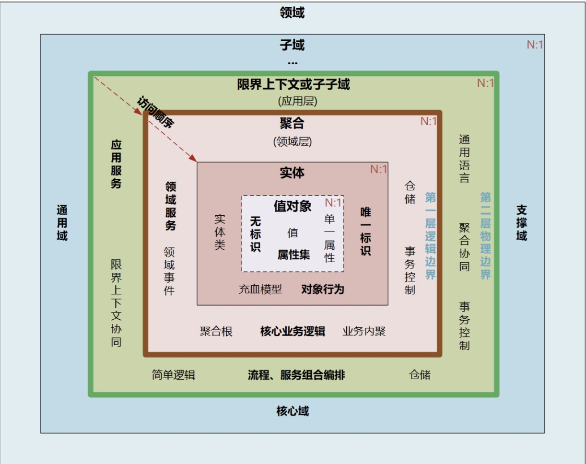

DDD（Domain-Driven Design）即"领域驱动设计"，是由Eric Evans最先提出，目的是对软件所涉及到的领域进行建模，以应对系统规模过大时引起的软件复杂性的问题。
由小伙伴Endlex传教，好的微服务架构设计，离不开DDD的指导。
整个过程大概是这样的:
1.开发团队和领域专家一起通过 通用语言(Ubiquitous Language)去理解和消化领域知识，
2.从领域知识中提取和划分为一个一个的子领域（核心子域，通用子域，支撑子域），
3.并在子领域上建立模型，
4.再重复以上步骤，这样周而复始，构建出一套符合当前领域的模型。
DDD的好处
一种全新的思维方式，帮助你和你的团队在 理解业务核心竞争力 的同时 提炼知识。
阅读推荐
领域驱动设计精粹入门必读，也是DDD领域较新的书籍实现领域驱动设计进阶必读，建议看完上面的再看这本（和上面那本是一个作者，这本值得反复学习）领域驱动设计软件核心复杂性应对之道 这本也不错，可以做扩展阅读- DDD实战课
战略设计
1) 运用 限界上下文 和 通用语言 进行战略设计
2) 运用 子域 进行战略设计
3) 运用 上下文映射 进行战略设计
DDD最为重要，不以战略设计开始，则战术设计将无法有效实施。
宏观层面的战略设计
1.学会运用名为 限界上下文（Bounded Context）的战略设计模式来分离领域模型。
2.了解如何使用在明确的限界上下文中发展一套领域模型的通用语言（Ubiquitious Language）。通过协作而产生的语言会变得统一、流行、并遍布于团队的日常口头交流和软件模型之中。
3.学习 子域（Subdomain），了解如何通过它处理遗留系统中无边界的复杂性，以及如何改进新项目上的成果。
4.了解如何通过名为 上下文映射(Context Maping) 的技术来集成多个限界上下文。 上下文映射图(Context Map)同时定义了2个进行集成的限界上下文之间的团队间关系及技术实现方式。
DDD战略模式
1. 领域和子域
领域（Domain），即一个业务范围以及这个业务范围内的软件活动。领域层是具体的业务领域层，是发生业务变化最为频繁的地方，是业务系统最核心的一层，是 DDD 关注的焦点和难点。
一个组织有一个大的业务范围，然后划分为组织部门，也会划分为子业务，这就是子域的概念。相应地，对于软件设计，就是把一个大的系统划分为多个模块，即多个子域。
一个业务系统有且只有一个核心域，并且核心域的提炼往往影响着整个系统的设计成败。
2. 限界上下文和通用语言
限界上下文的含义就是用一个清晰可见的边界将这个上下文勾勒出来，如此就能在自己的边界内维持领域模型的一致性与完整性。
通用语言是一个各种概念的集合，将一个限界上下文中的名词、动词和形容词全部集中在一起，且具有简洁、清晰的特性，这套通用语言与限界上下文对应，开发、产品和测试都基于通用语言进行沟通。
理想情况下，限界上下文与微服务可以一一对应，但在实际项目中，还会有一些调整，比如根据业务的相关度和变化频率，有时候就需要将多个限界上下文进行合并。
总结
DDD 可以有效地根据业务对复杂软件系统进行拆解，微服务架构与 DDD 相得益彰。
DDD 为微服务的边界拆分提供了方法论，可以解决微服务的粒度问题。
理解如何运用 DDD 进行领域场景分析的战略模式。DDD 不是银弹，实证软件工程强调了经验的重要性，然而 DDD 对于复杂软件系统的整体架构的搭建，有着重要的指导作用。
战术设计
1) 运用 聚合 进行战术设计
2) 运用 领域事件 进行战术设计
DDD最为突出，战术层面的设计工具。
聚合(Aggregate)模式 ： 一个比较重要的工具，被用来将若干 实体 和 值对象 以恰当的大小聚集在一起。
DDD常见术语

子域 (Subdomain)
限界上下文(Bounded Context)
是语义和语境上的边界。
上下文映射(Context Mapping)
聚合(Aggregate)
领域事件(Domain Events)
事件风暴（Event Storming）
一种快速的设计技术，让领域专家和开发人员都可以参与到这个快节奏的学习过程中。它聚焦于业务和业务流程，而非名次概念和数据。
应用DDD
吃透DDD的核心设计思想。
DDD强调领域模型和微服务设计的一体性。先有领域模型，才有微服务。（不是脱离领域模型谈微服务的设计）
通过战略设计 建立领域模型 和 划分微服务的边界。 (关键)
通过战术设计从领域模型转向 微服务设计和落地。
目标：边界清晰，可持续演进的微服务架构
DDD与中台、微服务的关系
中台，本质是业务模型。
微服务，是业务模型的系统落地。
DDD是一种设计思想，可以同时指导中台业务建模和微服务设计。
微服务设计为什么要选择DDD?
DDD加速和管理工具
当DDD时，我们的任务是：深入学习业务如何运作，然后基于学习的范围建立软件模型
DDD是否是银弹？
当然不是。
使用DDD指导开发复杂软件系统，从本质上并不会降低应用系统本身的复杂度。
DDD的核心价值在于它能帮你从战略设计到战术设计的过程进行规范。
在设计系统时就能思路清晰，从而使设计过程更加规范。